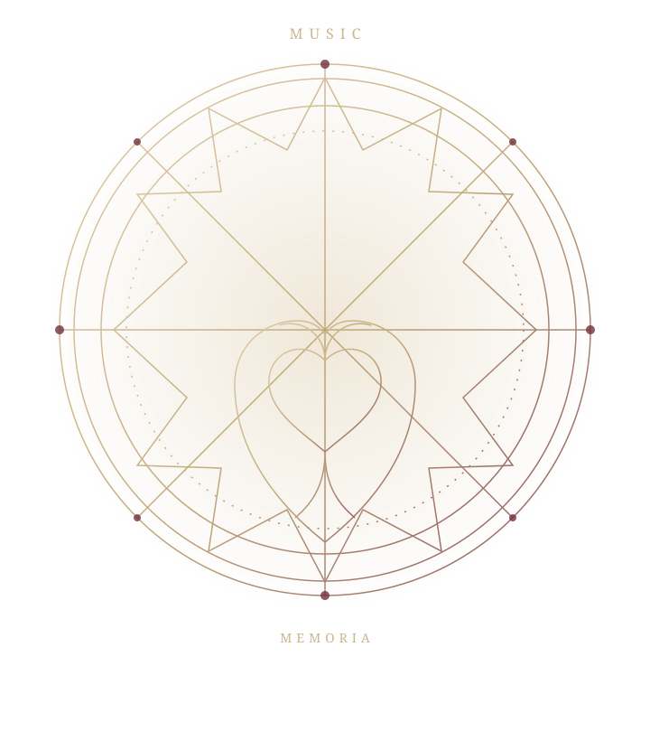

AN ORIGINAL TELEVISION ANIMATION PROJECT
A MELODY BEYOND LIFE AND DEATH
CLASSICA：LOID
薔薇の棺と、愛の旋律
音樂が、記憶を奏でる。
愛と生命、そして死の向こうへ。
THE ROSE COFFIN
AND THE MELODY OF LOVE
01 / THE WORK
INTRODUCTION
薔薇の棺に眠る、八つの旋律。
音樂は、
ただ鳴り響くだけではない。
『CLASSICA：LOID ― 薔薇の棺と、愛の旋律 ―』は、音樂・人物画・生命・愛・死・救済を中核に据えた、耽美ゴシック・音樂幻想・悲劇群像劇。
本作において音樂は、単なる劇伴ではない。人物の精神、記憶、生命、そして運命を表現する物語装置として存在する。
作品の世界観を読む ↗02 / THE NARRATIVE
STORY
音樂と物語が交差する、
全24話・2クール構想。
03 / EIGHT PORTRAITS
CHARACTER
八人の人物、その肖像と記録。
CHARACTER 01
サン・ジェルマン
ムジーク《月光》《葬送行進曲》《死の舞踏》に関する記録を持つ人物。
VIEW PROFILE ↗CHARACTER 02
ジャンヌ・ヴィラール
サン・ジェルマンの異父弟。
VIEW PROFILE ↗CHARACTER 03
鳴神 律
鳴神兄弟の兄。
VIEW PROFILE ↗CHARACTER 04
鳴神 眞
鳴神兄弟の弟。
VIEW PROFILE ↗CHARACTER 05
雪柳 残雪
音樂担当案は、じょるじん。
VIEW PROFILE ↗CHARACTER 06
羅馬 神門
雪柳残雪とは異なる人物。音樂担当案は、じょるじん。
VIEW PROFILE ↗CHARACTER 07
巫覡 亞矢
輝矢との主従関係と、家族的な結びつきを持つ男性。
VIEW PROFILE ↗CHARACTER 08
レスティア・アシュミール
音樂担当案は、誤植P。
VIEW PROFILE ↗04 / THE SOUND OF THE STORY
MUSIC
ARCHIVE
音樂は、記憶を奏でる。
主題歌、劇伴、キャラクター楽曲、そしてムジーク。作品を形づくる音樂の記録を収蔵する。
音樂アーカイブへ ↗05 / LATEST INFORMATION
NEWS
ニュースは順次掲載します。
A RECORD THAT WAS NOT MEANT TO BE FOUND
THE SEALED
ARCHIVE
ある音樂記録に、三つの作用が記されている。
その対応を確かめた者だけが、次の記録へ進める。